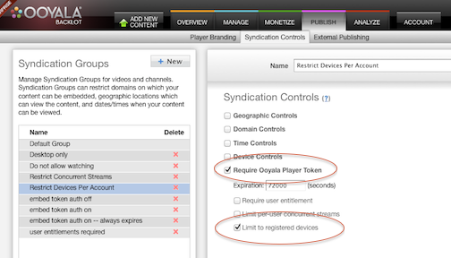
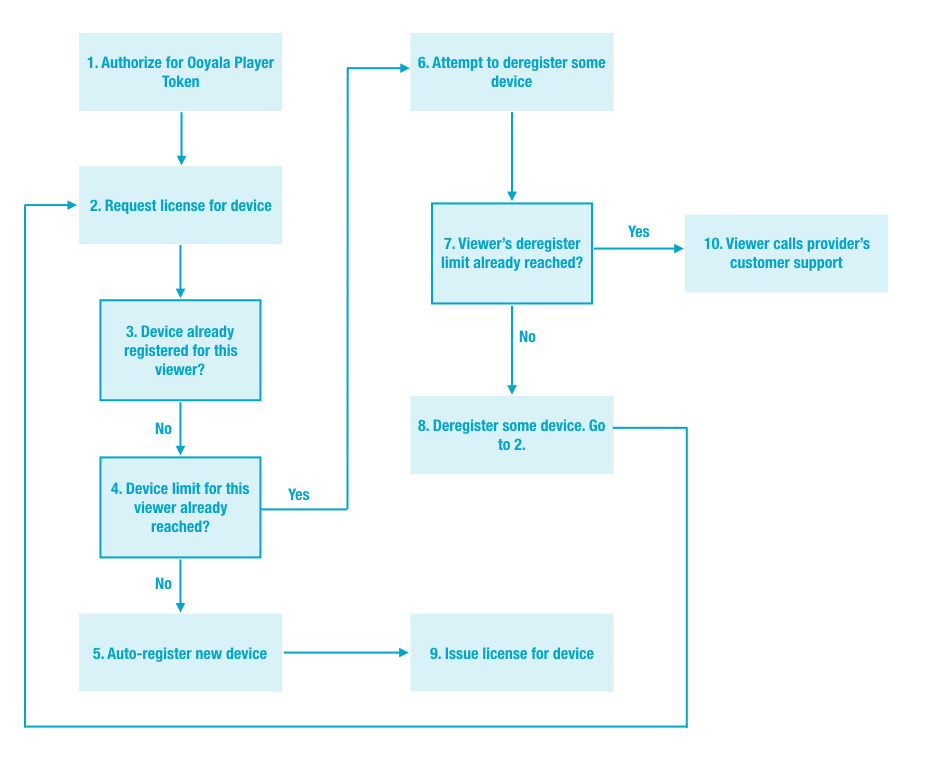

With Ooyala's device registration APIs, which are integrated with Ooyala Rights Locker, providers
can comply with content owners’ requirements to limit the number of devices associated
with a single viewer. A single consumer account (called a "viewer") can be limited to no
more than a specific number of registered devices, after which limit has been reached,
devices must be "de-registered" before other devices can be added. Only devices
registered to the viewer are able to play videos published with the device limits
policy.
Note: Player V4 does not support device registration for Widevine Modular.
The device registration API comes in two forms.
- An API for client application programs to register, delete, and update of lists
of viewers' devices. The endpoint for these API calls is
player.ooyala.com. This interface is suitable for you to
create a viewer self-service "portal" through which the viewers themselves can
manage their own registered devices, including creating easy-to-remember nicknames
for their devices.
- An API suitable for use by your customer support group to manage and view their
viewers' specific accounts device history and modify device rules or settings not
permitted by client application API described above. The endpoint for these API
calls is rl.ooyala.com. These calls must be signed by your
provider secret key, as described at Your API Credentials.
Supported Devices, Digital Rights Management (DRM) Systems, and Content
- Devices: All Ooyala premium content, DRM-supported devices
- Desktop browser and applications
- Android applications
- iOS applications
- Connected TV applications (LG Netcast Device not supported)
- Xbox applications
- Set-Top-Box (STB) applications
- DRM technologies:
- Adobe Access
- Google Widevine Modular
- Microsoft PlayReady
- Apple FairPlay
- Types of Content
- Only DRM-protected assets
- Ooyala-hosted assets
- Remote assets
- On-demand, linear, and live assets
There are two limits associated with device registration:
- Device limits: upper limit for the number of devices associated with a consumer
account. This limit is provider-wide and applies to all of the provider's assets with
the publishing rule limit_devices_per_viewer. For any one specific
provider, all assets subject to device limits have the same limit.
- Deregistration rule: limit consumer account to deregister X devices in
Y time interval. Ooyala enforces a limit on the number of deletions that can
happen in a given time period. Applies provider-wide to all assets.
For each asset, settings are required:
- The publishing rule "Require Ooyala Player Token" is required.
Note: Available only if your Ooyala account includes this functionality. To enable Ooyala Player Token, contact your account manager.
- The publishing rule limit_devices_per_viewer sets whether the
asset is restricted to registered devices.
These settings can be made in the Backlot UI under
Syndication Controls (which
is for publishing rules), as shown below, or via the Backlot API for publishing rules.

Some other considerations:
- Ooyala does not provide an authentication service; it is assumed that your
application has its own authentication model and service.
- There is no explicit call to register a device.
High-level Flowchart for Programming the User Portal
The logical flow of actions by the device registration application you write for the viewer
self-service portal is described below.

- After authentication is complete, the provider’s identity service needs to create an
Ooyala Player Token (OPT). The OPT is passed as part of the authorization request to obtain an
account_id.
- Application requests a DRM license for the DRM-protected stream. The license request is
proxied via your authorization service to the license server; the authorization service
attaches the account_id and request_id to the license
request.
- As part of the license request for the DRM-protected asset, when a user tries to play an asset published with a “require user entitlement”
policy, the entitlements for that specific user are checked against the Ooyala Rights
Locker. If the asset’s
policy includes device limits, Ooyala’s authorization service ensures that the current
device is in the registered domain of devices for that user before granting the
license. The DRM license servers generate a unique device id. The device id is
encrypted and cannot be read by the client application.
- As part of entitlement validation, Ooyala Rights Locker checks the device limits, based on the account_id
and device_id. A successful check is necessary before a DRM license.
Device Registration depends on the Ooyala Player Token for secure authentication
(account_id) and DRM for robust, secure device ID.
If all entitlement
checks pass, the license is cryptographically bound to the device. Device registration will
fail if the browser privacy settings/history/cache are cleared or if the browser is
uninstalled or reinstalled. If any of these events occur, the widevine and device_id cached in the
browser are removed. This could cause the device limit to be exceeded because the same device
would then have a new device_id and be tracked as a new device.
- If the device has not been registered, the provider can configure his service so that the
device is auto-registered. If the user has not exceeded the device limits, auto-registration
adds the device to the user’s device domain. (The user-agent string of the device is recorded
automatically.) The user is authorized to proceed.
For the Ooyala Flash Player, when an
authorization token is issued or modified, the event authTokenChanged is
triggered. With the player message bus, you can listen for this event. For an example, see
Listening To a Message Bus Event.
At this point, you can optional
automatically prompt the user for a device nickname. Of course, your user can also add a
device nickname later, either via your user portal or your customer support portal.
- If the user’s device limit has been exceeded, the system returns an error.
The provider’s application can use APIs to retrieve error information and the user’s
device nicknames to create a user experience that appropriately communicates the device
limit restriction. The provider can use APIs to create a self-service portal and/or
create a customer service capability to (de-) register devices.
- When authorization
fails, the client needs to make a request to user Portal API as defined below to get the
reason for failure, and trigger the appropriate user experience for remedying the error.
For the case where the number of devices has been reached, the user experience for
deregistering a device can be triggered.
- If the deregistration limit has not been reached, then the user can deregister
device.
The application should try again to get a license.
- The user might have to wait for the deregistration time limit before successfully obtaining the license.
- Otherwise, the user must talk to the
provider's customer support, who can use Device Registration APIs to override
restrictions.